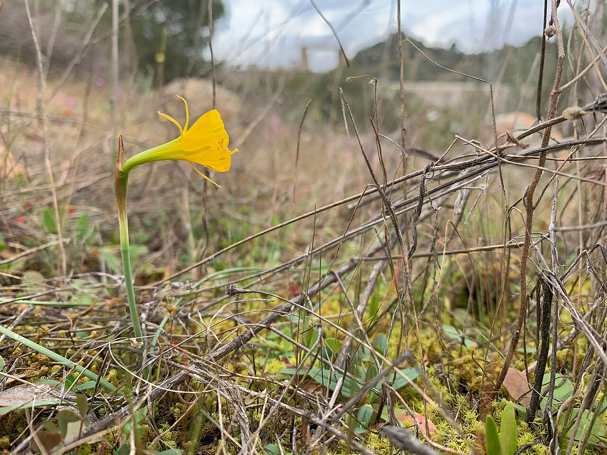

Plant evolution · University of Seville
Joan Cuscó
Borràs
I’m a PhD candidate studying how changes in chromosome number shape the evolution of Mediterranean plants.

Doctoral research
The evolution of
wild daffodils
My PhD focuses on Narcissus sect. Bulbocodii, the hoop-petticoat daffodils of the western Mediterranean. I combine field sampling, flow cytometry, genomic data and greenhouse experiments to study their diversification.
- Polyploidy and phylogeography
- Where do populations with different numbers of chromosome sets occur, and how are they related?
- Reproductive systems
- How does seed production differ between self- and cross-pollination?
- Ecological niches
- Do populations of different ploidy levels occupy different environments?
Selected
publications
ORCID profile
About me
I’m based in the Department of Plant Biology and Ecology at the University of Seville, where I work with Marcial Escudero and Violeta Simón-Porcar.
I studied Environmental Biology at the Universitat Autònoma de Barcelona and completed a master’s in Biodiversity at the Universitat de Barcelona, specialising in evolutionary biology. My doctoral training has included research stays at Naturalis Biodiversity Center and the University of Amsterdam.